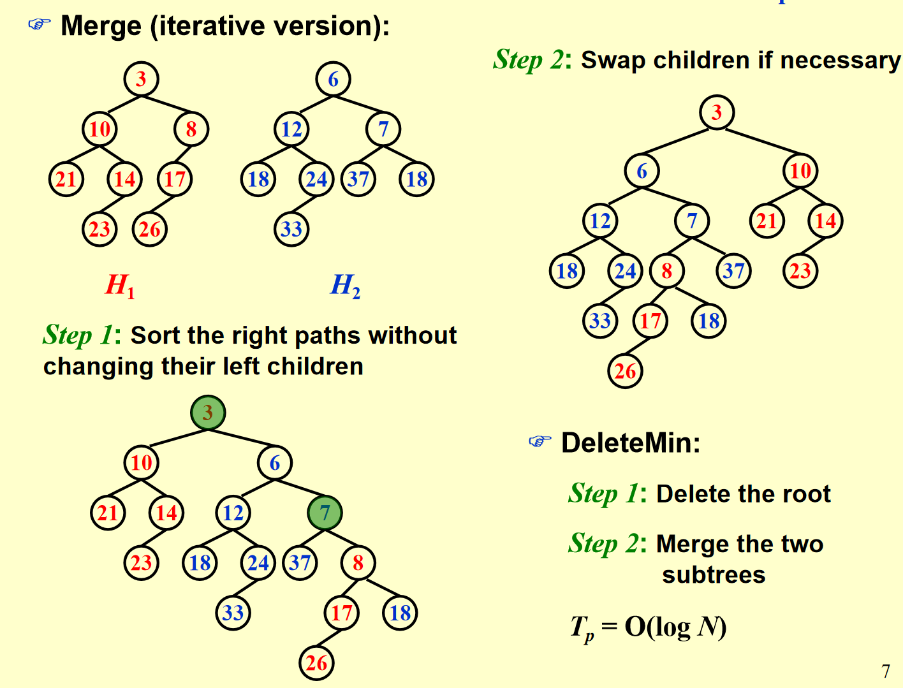
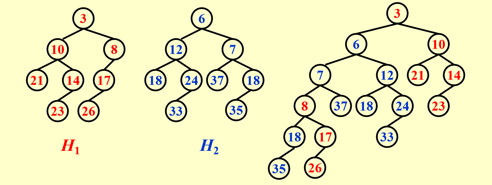

左式堆与斜堆¶
约 3467 个字 78 行代码 2 张图片 预计阅读时间 13 分钟
左式堆¶
在有的情况下，我们需要进行堆的合并操作，左式堆就是为了在merge操作中提供更好的性能。
定义¶
NPL
一个节点X的 NPL(Null Path Length) ，NPL(X)定义为从 X 到一个没有两个儿子的结点的最短路径的长。因此，具有 0 个或 1 个儿子的结点的 Npl 为 0，且规定 Npl(null)=-1
左式堆-leftist Heap
每个结点的左孩子的 Npl 都要大于等于其右孩子的 Npl。注意这一定义适用于没有两个孩子的结点，因为有定义 Npl(null)=-1
向左边倾斜有一个很好的性质
性质¶
在右路径上有 \(r\) 个结点的左式堆必然至少有 \(2^r − 1\) 个结点（右路径指从根结点出发一路找右孩子直到找到叶子的路径）。
这一定义指出：若一共有 \(n\) 个结点，那么右路径上的结点个数至多为 \(\log(n + 1)\)，因此左式堆的右路径结点数至多为 \(\log(n + 1)=O(\log n)\)。
Proof
我们可以使用数学归纳法证明这一性质
使用数学归纳法证明。若 \(r = 1\)，则显然至少存在 1 个结点。设定理对右路径上有小于等于 \(r\) 个结点的情况都成立，现在考虑在右路径上有 \(r + 1\) 个结点的左式堆。此时，根的右子树恰好在右路径上有 \(r\) 个结点，因此右子树大小至少为 \(2^r − 1\)。考虑左子树，根据左式堆定义左子树的 Npl 必须大于等 于 \(r − 1\)，事实上很容易归纳得到 Npl 大于等于 \(r − 1\) 的树右路径至少有 \(r\) 个结点，因此左子树大小也 至少为 \(2^r − 1\)，因此整棵树的结点数至少为
操作与实现¶
wyy有话说
有一个直觉是值得特别说明的，就是我们发现平衡搜索树中我们通常要求树越平衡越好，但堆却似乎不需要这一点，这是为什么呢。这是因为堆不支持 find 操作，所以左式堆左边的结点在操作中可以完全不被访问，而我们会知道只在右路径上操作也完全可以解决插入、删除最小值和合并，因此我们完全不需要保持树的平衡。
Merge&Insert¶
Insert：可以视为一个堆和一个单结点的堆的Merge，因此问题转化为Merge。
递归实现
PriorityQueue Merge ( PriorityQueue H1, PriorityQueue H2 )
{
if ( H1 == NULL ) return H2;
if ( H2 == NULL ) return H1;
if ( H1->Element < H2->Element ) return Merge1( H1, H2 );
else return Merge1( H2, H1 );
}
static PriorityQueue
Merge1( PriorityQueue H1, PriorityQueue H2 )
{
if ( H1->Left == NULL ) /* single node */
H1->Left = H2; /* H1->Right is already NULL
and H1->Npl is already 0 */
else {
H1->Right = Merge( H1->Right, H2 ); /* Step 1 & 2 */
if ( H1->Left->Npl < H1->Right->Npl )
SwapChildren( H1 ); /* Step 3 */
H1->Npl = H1->Right->Npl + 1;
} /* end else */
return H1;
}
Note
这里分开两个函数写主要是为了避免重复写H1接到H2和H2接到H1的代码，这样可以进一步的模块化减少代码量。
其主要步骤为
- 如果两个堆中至少有一个是空的，那么直接返回另一个即可；
- 如果两个堆都非空，我们比较两个堆的根结点 key 的大小，key 小的是 H1，key 大的是 H2；
- 如果 H1 只有一个顶点（根据左式堆的定义，只要它没有左孩子就一定是单点），直接把 H2 放在 H1 的左子树就完成任务了（很容易验证这样得到的结构符合左式堆性质，此时 Npl 也没有变化）；
- 如果 H1 不只有一个顶点，则将 H1 的右子树和 H2 合并（这是递归的体现，在 base case 设计良好，其它步骤也都合理的情况下你完全可以相信这一步递归帮你做对了），成为 H1 的新右子树；
- 如果 H1 的 Npl 性质被违反，则交换它的两个子树；
- 更新 H1 的 Npl，结束任务
合并的写法
PriorityQueue Merge( PriorityQueue H1, PriorityQueue H2 )
{
if (H1==NULL) return H2;
if (H2==NULL) return H1;
if (H1->Element>H2->Element)
swap(H1, H2); //swap H1 and H2
if ( H1->Left == NULL )
H->Left=H2;
else {
H1->Right = Merge( H1->Right, H2 );
if ( H1->Left->Npl < H1->Right->Npl )
SwapChildren( H1 ); //swap the left child and right child of H1
H1->Npl=H1->Right->Npl+1;
}
return H1;
}
swap函数可以调用std::swap，也可以自己实现。
递归实现的复杂度
首先分析递归的最大深度。我们发现，在 1-5 步这样的递归过程中，产生的递归层数不会超过两个左式堆的右路径长度之和，因为每次递归都会使得两个堆的其中一个（根结点 key 更小的）向着右路径上下一个右孩子推进，并且直到其中一个推到了 null 结点就不再加深递归。注意加深一层的过程中的操作是常数的，因为只需要简单的大小比较和找孩子，加上右路径长度的限制，因此递归向下的过程是 \(O(\log n)\) 的。这一点我们可以更严谨地展开：假设 \(H1\) 大小为 \(N1\)，\(H2\) 大小为 \(N2\)，两者路径之和
上面的推导用到了基本不等式 \(a + b \geqslant 2\sqrt{ab}\)。总而言之，两个堆右路径长度之和仍然是两个堆大小的对数级别，因此递归层数是 \(O(\log n)\) 的是准确的接下来分析递归返回的操作，事实上每一层的操作也是常数的，因为只需要接上新的指针，判断、交换 子树以及更新 Npl，所以也是 \(O(\log n)\) 的，因此总的时间复杂度就是 \(O(\log n)\) 的。
迭代实现
递归过程的展开实际上就等价于迭代算法的流程：每一次递归向下对应迭代中保留根结点更小的堆的左子树（就像是左子树不动，右子树等着接下来合并的结果），直到最后一次与 null合并直接接上，递归返回过程实际上就是逐个检查新的右路径上的结点是否有违反 Npl 性质的并且更新 Npl 即可，其它结点无需关心是因为它们根本就不受影响因为我们已经说明了迭代和递归的每一步都是有对应关系的，只不过递归是最后返回时才接上每个结点的右子树，迭代过程中就已经接好了，因此二者时间复杂度是一样的。当然，我们在完成上面的流程后会有一个观察，就是在递归向下之后，或者说交换孩子调整左式堆性质之前，合并得到的堆的右路径是原来两个堆的右路径合并排序的结果，通过上面的过程我们很容易证明这一结论是通用的，因为我们每次都在比较两个堆的右路径上两个点的大小，然后把小的作为根插入。有了这一规律，我们做题会更快捷一些，因为你只需要把两条右路径从小到大排序，然后从小到大依次带着左子树接入到新的右路径即可（但要注意在此之后还需要调整使得满足左式堆结构性质）。因此我们用代码实现迭代版本也并没有想象中复杂，只需要对两个堆右路径从小到大遍历操作，然后再从右路径最后一个点返回根结点，过程中检查结构性质并更新 Npl 即可

void npl_update(LeftistHeap h) {
if (h == NULL) return;
h->npl = h->right == NULL ? 0 : h->right->npl + 1;
}
LeftistHeap merge_iterative(LeftistHeap h1, LeftistHeap h2) {
if (h1 == NULL) return h2;
if (h2 == NULL) return h1;
LeftistHeap stack[MAX_STACK_SIZE] = {NULL};
int top = -1;
LeftistHeap h = NULL;//创建新堆
LeftistHeap *p = &h;//指向新堆的指针，用于更新
while (h1 != NULL && h2 != NULL) {
if (h1->key > h2->key) {
swap(h1, h2);
}//保证h1的key小于h2
stack[++top] = h1;//将h1入栈
*p = h1;//修改新堆对应位置上的值
p = &h1->right;//指针指向下一个需要更新的位置
LeftistHeap next = h1->right;//保留下一个h1
h1->right = h2;//将h2接到h1的右边,如果此时接得不对，会在下一次循环中*p=h1，来修改
h1 = next;//更新h1
}
*p = h1 == NULL ? h2 : h1;//剩余的直接接上
while (top >= 0) {
npl_update(stack[top--]);
}//更新npl
adjust(h);//调整堆
return h;
}
void adjust(LeftistHeap h) {
if (h == NULL) return;
adjust(h->right);
if (h->right == NULL) return；
if (h->left==NULL||h->left->npl < h->right->npl) {
swap(h->left, h->right);
}
npl_update(h);
}
斜堆¶
斜堆与左式堆的关系就像是 splay 树和 AVL 树之间的关系。回顾 splay 树，它并不需要维护 AVL 树中的 bf 属性，只需要在访问一个结点之后就无脑地将它用 zig/zig-zig/zig-zag 三种情况将它翻到根结点即可。
斜堆也是类似的想法，它不用再维护 Npl，因此在递归过程中左式堆所有维护结构性质以及更新 Npl 的
操作不再需要，取而代之的是如下操作:
斜堆
-
在 base case 是处理 H 与 null 连接的情况时，左式堆直接返回 H 即可，但斜堆必须看 H 的右路径，我们要求 H 右路径上除了最大结点之外都必须交换其左右孩子。
-
在非 base case 时，若 H1 的根结点小于 H2，如果是左式堆，我们需要合并 H1 的右子树和 H2作为 H1 的新右子树，最后再判断这样是否违反性质决定是否交换左右孩子，斜堆直接无脑交换，也就是说每次这种情况都把 H1 的左孩子换到右孩子的位置，然后把新合并的插入在 H1 的左子树上。
总的来说，斜堆的基本操作与左式堆类似，但是每一次递归完毕都进行不加判断大小的交换操作
Example

如果我们像前面分析左式堆那样展开递归的每一步，前面的过程很好理解，就是无脑交换根的 key 更小的堆的左右孩子，关键在于当递归到最深的一层我们看到实际上是merge 一个 null 堆和一个 18 为根、35 为 18 的左孩子的堆，我们看上面操作的第一条，这个堆的右路径上除了最大结点外都要交换左右孩子，但幸运的是，这个堆右路径只有 18 一个结点，它是最大的，所以无需交换。维基百科等地方的斜堆 base case 之后都无需操作，但这里可能还有操作
最后合并出的堆的左路径上讲包含两个原始堆的右路径排序后的结果，当然后面还可能连着原始堆右路径最大值的一些左孩子（因为这些左孩子是不被交换的）
斜堆的摊还分析¶
斜堆的期望类似于Splay tree，Any M consecutive operations take at most \(O(M \log N)\) time,为了证明这个，我们仍然需要用势函数法来进行摊还分析。
定义势函数之前，我们要先定义一些其它的东西
Definition
我们称一个结点 P 是重的（heavy），如果它的右子树结点个数至少是 P 的所有后代的一半（后代包括 P 自身）。反之称为轻结点（light node）
引理
对于右路径上有 \(l\) 个轻结点的斜堆，整个斜堆至少有 \(2^l − 1\) 个结点，这意味着一个 \(n\) 个结点的斜堆右路径上的轻结点个数为 \(O(\log n)\)。
我们可以使用数学归纳法来证明：
首先，对于l=1,整棵树至少有\(2^1-1=1\)个结点，结论是正确的； 假设对于右路径上有小于等于\(l\)个轻结点的斜堆，整个斜堆至少有\(2^l-1\)个结点的结论都成立 现在考虑右路径上有\(l+1\)个轻结点的斜堆。 设右路径上第一个轻结点为P，如果把这个结点及其左子树一起删除，则至少删除了以P为根的子树的所有的结点的一半再加一(右子树节点数加根)，因为P是轻的；则剩下的右路径上有\(l\)个轻结点，根据归纳假设，剩下的结点至少有\(2^l-1\)个，加上删掉的结点，整个斜堆至少有\(2*(2^l-1)+1\)
我们需要证明的是
若我们有两个斜堆 \(H1\) 和 \(H2\)，它们分别有 \(n_1\) 和 \(n_2\) 个结点，则合并 \(H1\) 和 \(H2\) 的摊还时间复杂度为 \(O(\log n)\)，其中 \(n = n_1 + n_2\)。
因为insert和delete都是以merge为基础的，所以我们只需要证明merge的摊还时间复杂度即可。
Proof
证明: 我们定义势函数 \(\Phi(Hi)\) 等于堆 \(Hi\) 的重结点（heavy node）的个数，并令 H3 为合并后的新堆.我们设 \(Hi(i = 1, 2)\) 的右路径上的轻结点数量为 \(li\)，重结点数量为 \(hi\)，因此真实的合并操作最坏的时间复杂度为
(所有操作都在右路径上完成)。因此根据摊还分析我们知道摊还时间复杂度为
事实上，在 merge 前我们可以记\(\Phi(H1) + \Phi(H2) = h1 + h2 + h\),其中 \(h\) 表示不在右路径上的重结点个数。现在我们要考察合并后的情况，事实上我们有两个非常重要的观察：
-
只有在 H1 和 H2 右路径上的结点才可能改变轻重状态，这是很显然的，因为其它结点合并前后子树是完全被复制的，所以不可能改变轻重状态；
-
H1 和 H2 右路径上的重结点在合并后一定会变成轻结点，这是因为右路径上结点一定会交换左右子树，并且后续所有结点也都会继续插入在左子树上（这也表明轻结点不一定变为重结点）。结合以上两点，我们知道合并后原本不在右路径上的 h 个重结点仍然是重结点，在右路径上的\(h1 + h2\)个重结点全部变成轻结点，\(l1 + l2\) 个轻结点不一定都变重，因此合并后我们有\(\Phi(H3) \leqslant l1 + l2 + h\),代入数据计算可得
根据前面的引理，\(l1 + l2 = O(\log n_1 + \log n_2) = O(\log(n_1 + n_2)) = O(\log n)\)（这里的等号之前有完全一样的说明过），并且注意到初始（空堆）势函数一定为 0。且之后总是非负的，所以这一势函数定义满足要求，因此我们的证明也就完成了。
Key-point
对于斜堆和左式堆的合并,是\(O(\log n)\)的，这个\(n\)既可以是两个堆的大小之和，或者是\(\max(n1,n2)\),因为